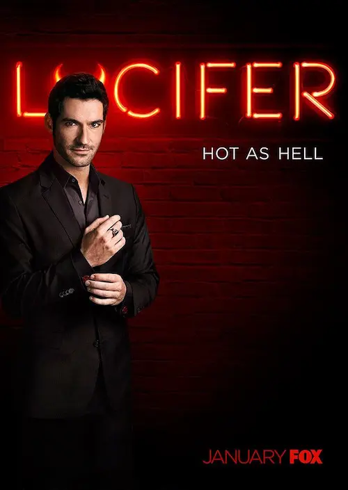
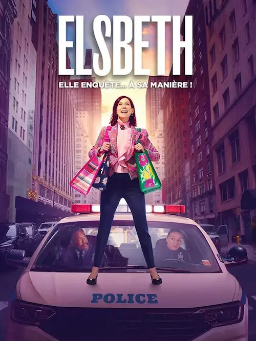
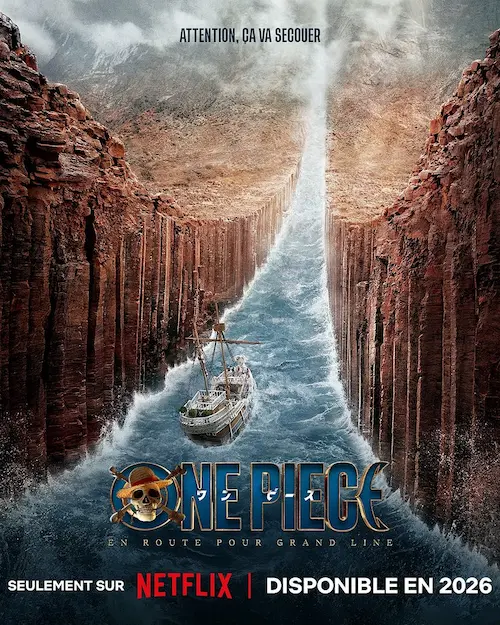

Dernières séries vues
Regarder des séries, c’est très cool. J’aime bien découvrir un nouvel univers, apprendre à connaître des personnages et suivre leur histoire. Ça prend aussi beaucoup de temps, mine de rien !
Voici les dernières séries vues.
Lucifer, à partir de 2016 (terminée)
Résumé

Lucifer Morningstar, fils de Dieu et ange déchu, a décidé de quitter l’Enfer pour prendre un peu de bon temps à Los Angeles. Il en a assez d’obéir aveuglément à son père. Pour mener sa petite rébellion, il ouvre une boîte de nuit et aide la police à résoudre des enquêtes avec le lieutenant Chloé Decker.
Mon avis
Le début de la série était amusant et assez bien pensé. Lucifer est marrant, la flic est insensible à son pouvoir et on sent qu’il va y avoir une histoire entre eux. Tout l’enjeu repose sur le fait qu’il lui cache sa véritable identité tout en lui disant toujours la vérité. Elle le prend pour un hurluberlu, mais le fait est qu’il est doué pour résoudre les enquêtes.
À partir du moment où elle le voit sous son vrai visage, enfin, c’est le délire complet. Et quel dommage ! Autant les ailes, les yeux diaboliques et tous les trucs un peu mystiques pouvaient paraître ridicules depuis le début, mais ils participaient au comique de l’ensemble. Ce moment clé où elle voit son visage est très dramatique. Et sa réaction ensuite complètement incompréhensible, tout comme son revirement derrière.
Bref, la fin est nulle à chier.
Elsbeth, depuis 2024
Résumé

Elsbeth Tascioni est une avocate de Chicago mandatée par le juge pour suivre les enquêtes menées par la police de New York afin de démasquer de potentiels flics ripoux.
D’abord mal vue, elle s’intègre rapidement à l’équipe et ses méthodes peu conventionnelles permettent de faire avancer la résolution des enquêtes. Si bien que le Capitaine veut la garder dans l’équipe.
Mon avis
Très bonne série policière dans laquelle on s’amuse beaucoup, avec de chouettes personnages et des enquêtes assez loufoques. On est un peu dans l’esprit HPI, si on veut comparer.
Malheureusement, la diffusion a été arrêtée en pleine saison en France, faute de traduction des derniers épisodes sortis. Je n’ai donc pas pu voir la fin de la saison 3 et je ne pense pas pouvoir regarder la quatrième à venir.
One Piece (saison 2), depuis 2023
Résumé

Luffy et ses compagnons se rendent enfin sur Grand Line dans l’espoir de trouver des indices sur la localisation du One Piece. Malheureusement, des mercenaires sont à leurs trousses, ainsi que des soldats de la marine.
Bien que son grand-père et Kobi ne lui courent plus après, Luffy doit faire face à de nouveaux adversaires. Cela ne l’empêche pas de se faire de nouveaux amis et d’agrandir son équipage.
Mon avis
Quelle déception ! Cette saison 2 est nettement en dessous de la première. Avoir à attendre aussi longtemps entre deux saisons pour obtenir ça, c’est carrément rédhibitoire.
Les personnages sont devenus fénéants, plus que l’ombre d’eux mêmes. Luffy n’a même plus son charisme. Des personnages bien travaillés comme Kobi et son acolyte ont complètement disparu alors que de nouveaux sont présentés, sans âme semble-t-il. Et où sont passés le mentor de Luffy, l’ennemi ultime de Zoro ? C’est trop dommage.
J’imagine que la série suit l’histoire de l’anime. Et en prenant des raccourcis en plus ! Pour autant, il faut rester un peu cohérent. Je ne suis pas sûre d’avoir envie de voir la suite.
Voilà pour les séries. Il y en aura toujours de nouvelles à découvrir, donc ce n’est pas si grave si on ne voit pas les suites. En même temps, j’ai eu comme un sentiment d’inachevé… Ne pas me plonger totalement dedans et ne pas être happée par les personnages me donne une impression d’échec.